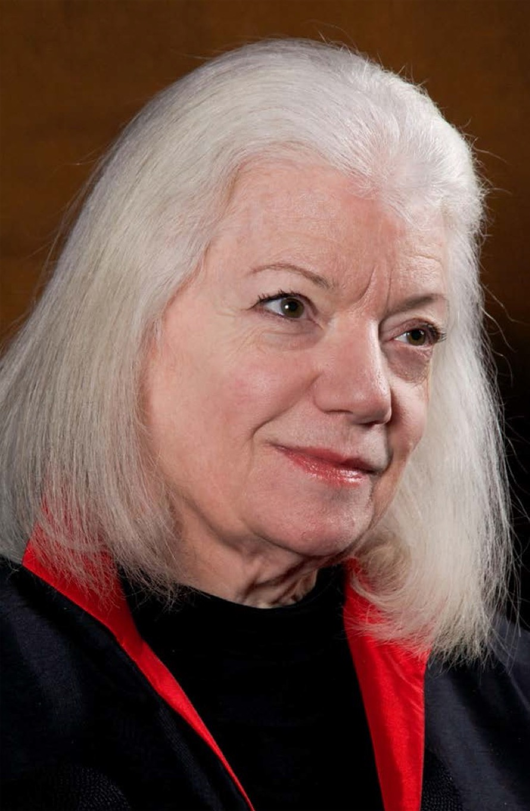

Sue Carter, PhD
Distinguished Research Scientist and Rudy Professor Emerita of Biology at Indiana University and Professor of Psychology at the University of Virginia
Sue Carter, Ph.D. is currently a Distinguished Research Scientist and Rudy Professor Emerita of Biology at Indiana University and Professor of Psychology at the University of Virginia. She previously held Professorships at the University of Illinois at Chicago, the University of Maryland, College Park (where she was a Distinguished University Professor), and the University of Illinois, Urbana-Champaign. Between 2014 and 2019 she was the Executive Director of the Kinsey Institute.
Dr. Carter’s research was integral to discovering the relationship between social behavior and oxytocin. Her current work in humans and other mammals examines the developmental and epigenetic consequences of oxytocin and the role of oxytocin pathways in selective sociality and the management of social isolation, stress and trauma. She was the first person to detect and define the endocrinology of social bonds through her research on the socially monogamous, prairie vole. These findings helped lay the foundation for ongoing studies of behavioral and developmental effects of oxytocin and vasopressin and a deeper appreciation for the biological importance of relationships, sociostasis and hormesis in human health and wellbeing.
She has authored over 400 scientific papers and edited 7 volumes dealing with the biology of social behavior, attachment and reproduction and was recipient of the 2024 Bruce McEwen Lifetime Achievement Award from the International Society for Psychoneuroendocrinology and the 2026 Patricia Barchas Award in Sociophysiology from the Society for Biopsychosocial Science and Medicine.